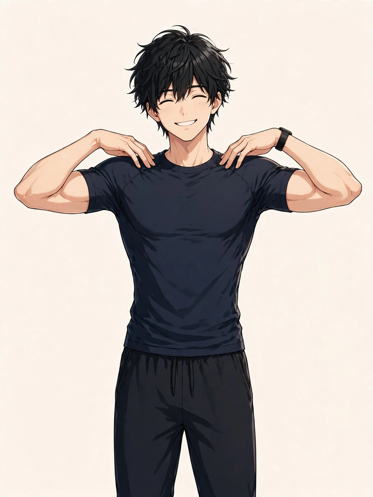

東三国で気になる巻き肩
男性の肩まわりの整え方とセルフケア、受診の目安

「横から鏡を見ると、肩が耳より前に出ている気がする」「写真で見ると胸が閉じたように見えて、姿勢が気になる」。東三国や新大阪、淀川区周辺で働く男性から、巻き肩にまつわるこうした声を聞くことがあります。巻き肩の感じ方や背景は人によって異なり、一つの原因だけで説明できるものではありません。この記事では原因を断定するのではなく、巻き肩についての一般的な考え方と、考えられる要因、日常で試せるセルフケア、医療機関に相談したほうがよい目安をまとめます。背中全体の丸みや座り方・立ち方を扱った姿勢・猫背についてのコラムとは視点を分け、ここでは「肩まわり」――肩と肩甲骨の位置に絞って取り上げます。
巻き肩とは：肩が内側・前側に入りやすい状態
「巻き肩」は正式な病名ではなく、肩が体の内側・前側へ入り、肩甲骨が外側へ開き気味になった状態を指して使われることが多い言葉です。横から見ると肩の位置が耳より前に出て見える、胸の前が閉じたように見える、腕が体の前側に寄って見える、といった見え方で気づく方がいます。姿勢全体を表す「猫背」と重なる部分もありますが、猫背が背中全体の丸みを含む言葉であるのに対して、巻き肩は肩と肩甲骨まわりの位置に焦点を当てた言い方です。一般に、肩甲骨は胸郭（肋骨の集まり）の上に乗るように位置し、姿勢や筋肉の使い方によって前後の位置が変わるため、長時間同じ姿勢で過ごす生活では肩が前側に入った位置で落ち着きやすい、とされています。まずは「横から見たときに肩がどの位置にあるか」「左右で違いがあるか」「どんな場面で気になるか（デスクワーク中、スマホを見るとき、写真に写った姿など）」を自分の言葉で整理しておくと、セルフケアの選び方や、専門家に相談するときの伝え方がスムーズになります。
考えられる要因の整理
巻き肩を意識する背景には、姿勢の取り方やデスク環境、筋肉の使い方など、いくつかの要因が重なっている場合があります。以下は代表的なものとして挙げられる要因ですが、当てはまるかどうかや程度は人によって異なります。
肩と肩甲骨の位置は、図1のとおりです。
巻き肩は、肩甲骨が外側へ開いて肩が前側へ入ることで自覚されることが多いとされます。首の付け根は、肩まわりの張りを感じやすい位置の一つです。位置は目安です。
- 前かがみで腕を前に出す姿勢の長さ：デスクワークやスマートフォンを見る姿勢など、腕を体の前に出して過ごす時間が長い生活では、肩が内側に入った位置のまま過ごす時間が長くなりやすい、とされています。
- 胸の前側のこわばり感：大胸筋や、その奥にある小胸筋など胸の前側の筋肉が縮こまった状態が続くと、肩を後ろへ引きにくく感じたり、胸を開きにくく感じたりする場合があります。
- 背中側の筋肉を使う機会の少なさ：肩甲骨を寄せたり安定させたりする背中側の筋肉を使う機会が少ない生活では、肩甲骨の位置が外側に寄ったままになりやすい、と話す専門家もいます。
- 椅子・机・画面の高さとの相性：画面が低い位置にある、椅子に対して机が高いなど、環境に合わせて前かがみになりやすい条件が重なると、肩が前に出る姿勢が続きやすい場合があります。
- 鞄の持ち方や片側への負荷：いつも同じ側の肩に鞄をかける、重い荷物を片手で持つことが多いなど、左右どちらかへ負荷が寄る習慣が、肩の位置の左右差として表れる場合があります。
- 運動量や姿勢を変える機会の少なさ：腕を大きく動かす運動や、肩まわりを動かす機会が少ない日が続くと、肩まわりのこわばりを自覚しやすい、と感じる方もいます。
- 睡眠や全身の疲労の残り方：忙しい時期や睡眠が短い日が続くと、全身の疲労感とあわせて肩まわりの張りや姿勢の崩れを意識しやすいと話す方もいます。枕の高さとの相性が気になる方もいます。
日常で取り入れられるセルフケア
仕事の合間の短い時間や、帰宅後に試せるものを中心にまとめました。強い痛みがあるときは無理をせず、気になる症状が強いときは、セルフケアより先に医療機関への相談をご検討ください。
- 肩回しで肩甲骨まわりを動かす：両手の指先を両肩に軽く置き、肘で大きな円を描くようにゆっくり回す動きです（図2）。デスクワークの合間の短い時間にも取り入れる方がいます。
- 胸の前側を開くストレッチ：ドアの枠や壁に前腕をつけ、体を少し前に傾けて胸の前側の伸びを感じる方法です。反動をつけず、気持ちよいと感じる範囲でゆっくり行ってください。
- 肩甲骨を寄せる動きを入れる：背筋を伸ばして座り、両方の肩甲骨を背中の中央へゆっくり寄せて数秒保ち、力を抜く動きを数回繰り返す方法です。肩をすくめないよう、耳と肩の距離を保つ意識で行う方がいます。
- 画面と椅子の高さを見直す：画面の上端が目の高さに近づくよう調整する、肘が体の近くで楽に曲がる高さに椅子や机を合わせるなど、環境側の見直しも姿勢の保ち方に関わる場合があります。
- 1時間に一度は姿勢を変える：タイマーなどを目安に、立ち上がって歩く、腕を頭の上へ伸ばすなど、同じ姿勢を続けない工夫です。深呼吸を合わせて行う方もいます。
- 鞄の持ち方を左右で替える：いつも同じ肩にかけている鞄を反対側に替える、リュックを使う日を作るなど、片側への負荷が続かないような工夫です。
- 湯船に浸かって肩まわりを温める：帰宅後はシャワーだけで済ませず、湯船に浸かって肩まわりまで温める時間を作る方もいます。力を入れすぎない範囲で、手のひらで肩から背中をやさしくなでるケアと合わせる方もいます。
肩回しの動きの目安は、図2のとおりです。

①両手の指先を両肩に軽く置く ②肘で大きな円を描くように、ゆっくりと前から後ろへ数回回す ③反対方向にも同じ回数だけ回す、が基本の流れです。反動をつけず、痛みが強いときは無理をしないでください。
セルフケアは一度に全部をやろうとせず、続けられそうなものを一つ選ぶところから始めるのがおすすめです。感じ方には個人差があり、その日の仕事内容や体調によっても変わりますので、無理のない範囲で行ってください。
医療機関への受診を考える目安
次のような様子がある場合は、セルフケアや当院でのケアの前に、整形外科などの医療機関への相談をご検討ください。当院は医療機関ではなく、症状の診断や治療は行いません。肩まわりの不調の背景には、姿勢以外の原因が関わる場合もあります。
- 肩や腕に強い痛みがあり腕が上がりにくい、夜に痛みで目が覚める
- 腕や手にしびれがある、腕に力が入りにくい感じがする
- 肩まわりが腫れている、皮膚の赤みや熱感を伴っている
- 転倒や打撲、スポーツで痛めたあとから痛みや動かしにくさが出た
- 左右どちらか一方だけ、急に肩の位置や見た目が変わった
- 休んでも痛みやこわばりが数週間以上続き、だんだん強くなっている
上記に当てはまらなくても、気になる症状が続くときは、早めに医療機関や専門家へ相談することが大切です。自己判断だけで様子を見続けないことも一つの目安になります。
当店でのケアと北辰堂のご案内
北辰堂は、大阪市淀川区東三国二丁目にある男性専用の整体院です。施術歴30年の平賀伸人（鍼灸師・国家資格）が、整体とリラクゼーションを行います。当院では鍼灸施術は行いません。営業は平日・土曜17:00〜22:00、日曜10:00〜22:00の完全予約制です。巻き肩や肩まわりの張りが気になる方は、仕事帰りの平日夜や日曜の時間帯にご相談いただけます。料金は60分 初回2,000円／2回目以降6,000円、90分 初回3,000円／2回目以降9,000円で、お支払いは現金のみです。プライバシーへの配慮のため、詳しい住所はご予約確定後にLINEでご案内します。
施術を受けたからといって体の状態がどうなるかをお約束することはできませんが、その日の体の状態を確認しながら、肩や肩甲骨まわりだけでなく姿勢全体の様子も見て、ゆっくり体を預けられる時間をご用意しています。仕事中の座り方や画面の位置など、日常で気になっていることも、カウンセリングの際にお聞かせください。気になるお悩みの例はお悩み別一覧にもまとめています。
コースの内容はメニュー・料金、施術者は施術者について、ご予約の流れは当日の流れとLINE予約の下書きづくり、場所についてはアクセスをご覧ください。あわせて姿勢・猫背についてのコラムやデスクワークの肩こりについてのコラム、よくある質問もご参考ください。
ほかのコラム記事
関連するお悩みページ
ご予約・ご相談はLINEから
東三国・新大阪・淀川区周辺で、体のケアの相談先をお探しの方は、LINE公式アカウント（北辰堂）からお気軽にご連絡ください。現在の状態をお聞きしたうえで、施術の進め方をご案内します。
LINEで予約する